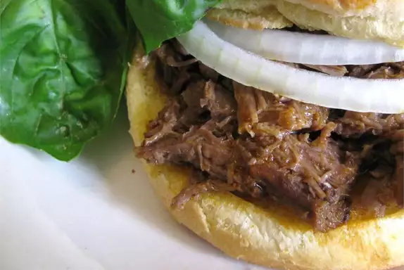

PDQ Hot Beef Sandwiches

About this recipe
A tasty sandwich that is great for cookouts and holiday events.
Ingredients:
- 1 tablespoon vegetable oil
- 1 (4 pound) beef chuck roast
- 1 cup chili sauce
- 1/2 cup water
- 1/2 cup white vinegar
- 1 tablespoon chili powder
- salt and pepper to taste
- 1 teaspoon garlic powder, or to taste
- 2 teaspoons white sugar
Steps
- Heat vegetable oil in a large Dutch oven over medium-high heat.
Place the roast in the pan, and brown on all sides.
- Reduce heat to medium-low, and pour in the chili sauce, water,
and vinegar. Season with chili powder, salt, pepper, garlic powder
and white sugar. Simmer over medium-low heat for 3 hours, or until
meat is fork tender. Remove beef, and refrigerate overnight.
Reserve sauce, and refrigerate.
- Slice or shred beef, and place in a large pot on the stove with
the sauce. Heat through, and serve alone, or on your favorite
sandwich buns.